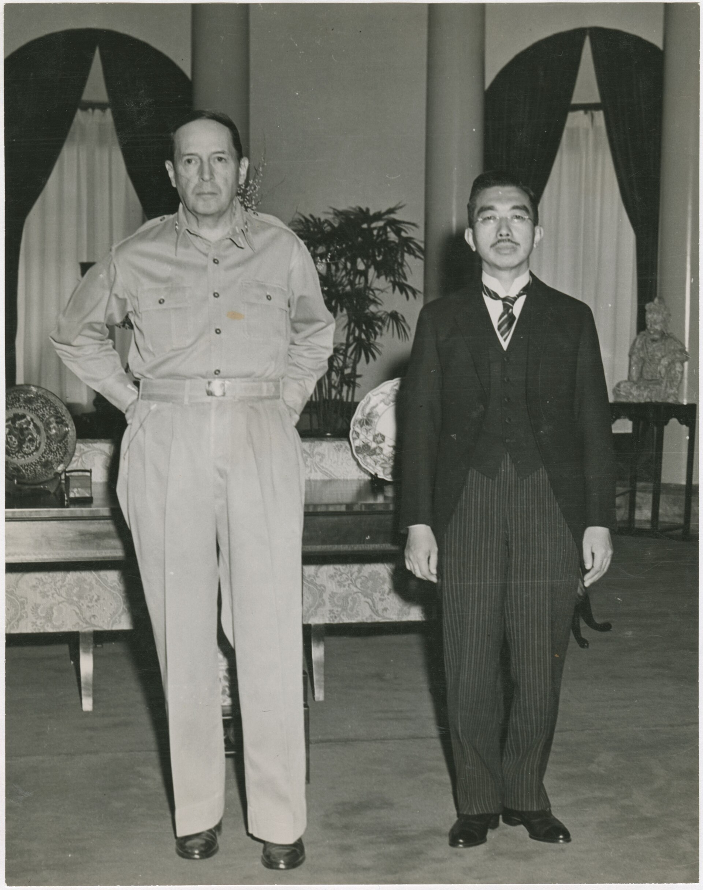
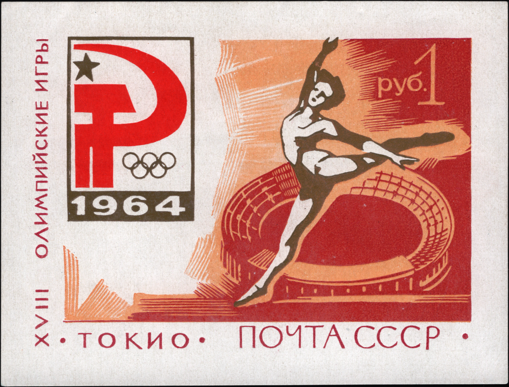

Überblick
Die Epoche Nachkriegszeit–heute (1945–Gegenwart, hier bis zum Kontextjahr 2026) umfasst Japans Weg von der Kapitulation und alliierten Besatzung über den Wiederaufbau, das Wirtschaftswunder und das parteipolitische „55er-System“ bis in die Heisei- und Reiwa-Zeit. Unter der Führung des Supreme Commander for the Allied Powers (SCAP), faktisch der USA unter General Douglas MacArthur, wurden Demilitarisierung, Demokratisierung und eine neue Verfassung (1947) eingeleitet. Mit dem Friedensvertrag von San Francisco (1951) und dem parallel geschlossenen Sicherheitsvertrag mit den USA endete die Besatzung 1952; Japan wurde souverän, blieb aber sicherheitspolitisch eng an Washington gebunden.
Charakteristisch sind hohes Wirtschaftswachstum (1950er–1970er Jahre), die Dominanz der Liberaldemokratischen Partei (LDP) ab 1955, Ölschocks, die Spekulationsblase der späten 1980er Jahre und die anschließenden „verlorenen Jahrzehnte“, die Heisei-Zeit (1989–2019) mit demografischem Wandel und der Dreifachkatastrophe von 11. März 2011 (Erdbeben, Tsunami, Fukushima), sowie ab 2019 die Reiwa-Ära unter Kaiser Naruhito. Die Epoche ist offen: Es gibt kein abgeschlossenes historisches Ende, sondern fortlaufende Herausforderungen (Alterung, Sicherheit in Ostasien, Klimapolitik, digitale und fiskalische Reformen). Datierungskonvention: Beginn mit Kapitulation und Besatzung 1945; „Ende“ hier als Ausblick bis 2026.
Akteure
- Supreme Commander for the Allied Powers (SCAP) / Douglas MacArthur: Formell alliierte, faktisch US-geführte Besatzungsbehörde; prägte frühe Reformen, Verfassung und den „Reverse Course“.
- Kaiser Hirohito (Shōwa, 1901–1989): Blieb als Symbol der Einheit, wurde aber vom „göttlichen“ Souverän zum konstitutionellen Symbolkaiser umgedeutet; Rolle im Krieg und in der Nachkriegsordnung bleibt historiografisch differenziert.
- Kaiser Akihito (Heisei, geb. 1933) und Kaiser Naruhito (Reiwa, geb. 1960): Träger der symbolischen Monarchie nach Artikel 1 der Verfassung; Akihitos Abdankung 2019 leitete die Reiwa-Ära ein.
- Premierminister und Parteiführer: u. a. Yoshida Shigeru (frühe Nachkriegsordnung, „Yoshida-Doktrin“), Ikeda Hayato (Einkommensverdopplung), Satō Eisaku, Tanaka Kakuei, Nakasone Yasuhiro, Koizumi Jun’ichirō, Abe Shinzō (längste Amtszeit der Nachkriegszeit; „Abenomics“), sowie nachfolgende Kabinette bis in die 2020er Jahre.
- Liberaldemokratische Partei (LDP) und Opposition: LDP als dominante Regierungspartei ab 1955; Sozialisten/Kommunisten und spätere Reform- und Oppositionsparteien (u. a. DPJ/CDP) als Gegenpole.
- Bürokratie, Keiretsu und Bankensystem: Träger industrieller Planung, Exportorientierung und der engen Staat-Wirtschaft-Verflechtung nach Auflösung der Vorkriegs-zaibatsu.
- Selbstverteidigungsstreitkräfte (JSDF) und US-Streitkräfte in Japan: Institutionelle Säulen der Sicherheitsordnung unter Artikel 9 und dem Sicherheitsvertrag.
- Zivilgesellschaft und Opfergruppen: Gewerkschaften, Studentenbewegung (u. a. Anpo 1960), Umweltbewegungen, sowie Betroffene von Minamata, Hiroshima/Nagasaki-Erinnerung und der Fukushima-Katastrophe.
- Nachbarstaaten und Verbündete: USA als Sicherheitsgarant; China, Republik Korea, Russische Föderation und weitere Akteure im regionalen Kräftefeld; ASEAN und multilaterale Foren als Wirtschaftspartner.
Was geschah
Besatzung und Verfassung

Am 15. August 1945 verkündete Kaiser Hirohito die Annahme der Potsdamer Bedingungen; die formelle Kapitulation folgte am 2. September. Die Besatzung (1945–1952) unter SCAP entwaffnete das Militär, löste ultranationalistische Organisationen auf, führte Kriegsverbrecherprozesse (u. a. Tokioter Tribunal) durch und initiierte Landreform, Förderung von Gewerkschaften, Frauenwahlrecht und Bildungsreform. Die Verfassung von 1947 (in Kraft 3. Mai) verankerte Volkssouveränität, Grundrechte und in Artikel 9 den Verzicht auf Krieg und auf Unterhaltung von Streitkräften zur Kriegsführung. Der Kaiser wurde zum „Symbol des Staates und der Einheit des Volkes“. Die Verfassung entstand unter starkem SCAP-Einfluss, wurde aber vom japanischen Reichstag verabschiedet und blieb seither formell unverändert in Kraft; Debatten um Revision (besonders Artikel 9) ziehen sich bis in die Gegenwart.
Ab etwa 1947/48 verschob der Reverse Course die Prioritäten: Angesichts des Kalten Krieges (China 1949, Koreakrieg 1950–1953) rückten wirtschaftliche Stabilisierung, Eindämmung der Linken und die Einbindung Japans in das westliche Lager vor radikale Entflechtung der Wirtschaftseliten. Der Friedensvertrag von San Francisco (unterzeichnet 8. September 1951, in Kraft 28. April 1952) beendete den Kriegszustand mit den meisten Alliierten; parallel wurde der US-Japan-Sicherheitsvertrag geschlossen (1951; revidiert 1960). Die Sowjetunion und die Volksrepublik China gehörten nicht zu den Unterzeichnern des San-Francisco-Vertrags; Beziehungen zu beiden wurden später gesondert geregelt. Okinawa blieb bis 1972 unter US-Verwaltung und ist bis heute Standort großer US-Basen. Mit Souveränität 1952 begann die Yoshida-Doktrin: wirtschaftliche Priorität, begrenzte Wiederbewaffnung in Form der Selbstverteidigungsstreitkräfte (ab 1954) und Verlass auf den US-Schutzschild.
Wirtschaftswunder und 55er-System

1955 fusionierten konservative Kräfte zur Liberaldemokratischen Partei; zusammen mit der sozialistischen Opposition entstand das sogenannte 55er-System: langfristige LDP-Mehrheit, bürokratische Steuerung und korporatistische Abstimmung mit Industrie und Landwirtschaft. Das Wirtschaftswunder (kōdo keizai seichō) brachte jahrelang zweistellige oder hohe einstellige Wachstumsraten, getragen von Exportindustrie (Stahl, Schiffbau, Autos, Elektronik), hoher Sparquote, Technologieimport und industrieller Politik (u. a. MITI). Premierminister Ikeda verkündete um 1960 das Ziel der Einkommensverdopplung. Die Olympischen Spiele 1964 in Tōkyō symbolisierten die Rückkehr auf die Weltbühne; der Tōkaidō-Shinkansen wurde eröffnet. Urbanisierung, Massenverbrauch und eine expandierende Mittelschicht veränderten Alltag und Gesellschaft.
Zugleich gab es Konflikte: Die Revision des Sicherheitsvertrags 1960 (Anpo) löste Massenproteste aus; Umweltkatastrophen (Minamata, Yokkaichi u. a.) zeigten die Kosten ungebremsten Wachstums. Die Ölpreiskrisen 1973 und 1979 beendeten die Phase extrem hohen Wachstums; Japan passte sich mit Energieeffizienz, Hochtechnologie und Finanzkraft an. In den 1980er Jahren stiegen Yen-Aufwertung (Plaza-Abkommen 1985), Handelsüberschüsse und Spannungen mit den USA. Ende der Dekade entstand eine Spekulationsblase bei Aktien und Immobilien; ihr Platzen ab 1990/91 leitete lange Stagnation, Bankenkrise und Deflationsdruck ein.
Ende des Kalten Krieges und Heisei
Mit dem Tod Kaiser Hirohitos am 7. Januar 1989 begann die Heisei-Zeit. Der Kalte Krieg endete; Japan blieb Wirtschaftsmacht, geriet aber innenpolitisch und fiskalisch unter Druck. Die „verlorenen Jahrzehnte“ (ushinawareta jūnen / später oft länger gefasst) waren geprägt von schwachem Wachstum, Reformversuchen des Finanzsektors, wechselnden Koalitionen und 1993 kurzzeitigem Verlust der alleinigen LDP-Macht. Die Wahlrechtsreform der 1990er Jahre und spätere Umstrukturierungen der Parteienlandschaft veränderten, beseitigten aber nicht dauerhaft die zentrale Rolle der LDP. Demografisch setzte beschleunigte Alterung und Geburtenrückgang ein; Zuwanderung blieb vergleichsweise begrenzt.
Am 11. März 2011 erschütterte ein schweres Seebeben vor Tōhoku das Land; der Tsunami und die Kernschmelzen im Kraftwerk Fukushima Daiichi forderten zahlreiche Todesopfer, Vertriebene und eine langfristige energie- und gesellschaftspolitische Zäsur. Die Katastrophe verstärkte Debatten über Atomkraft, Krisenmanagement und regionale Ungleichheit. Ab Dezember 2012 kehrte Abe Shinzō an die Macht zurück; Abenomics kombinierte lockere Geldpolitik, fiskalische Impulse und Strukturreformen („drei Pfeile“). Ziele waren Überwindung der Deflation und Belebung von Wachstum und Arbeitsmarkt; die Bewertung der Ergebnisse bleibt in der Forschung und Öffentlichkeit differenziert (u. a. Unternehmensgewinne und Beschäftigung vs. öffentliche Verschuldung und ungleichmäßige Einkommenswirkungen). Sicherheitspolitisch wurden Interpretationen der Verfassung und Gesetze zur kollektiven Selbstverteidigung angepasst; die Bündnisbeziehung zu den USA blieb zentral. 2019 dankte Akihito ab; am 1. Mai begann die Reiwa-Ära unter Naruhito.
Reiwa und Gegenwart
Die Reiwa-Zeit (ab 2019) fiel zunächst mit der COVID-19-Pandemie, verzögerten Olympischen Spielen Tōkyō 2020 (ausgetragen 2021) und anschließender wirtschaftlicher Erholung zusammen. Strukturell dominieren demografische Alterung, Fachkräftemangel, hohe Staatsschuldenquote und die Frage nachhaltigen Wachstums bei knapper Bevölkerung. Gesellschaftlich bleiben Themen wie Geschlechtergleichstellung, Pflege, regionale Schrumpfung und begrenzte Immigration auf der Agenda. Außen- und sicherheitspolitisch nimmt Japan die veränderte strategische Lage in Ostasien wahr: steigende Spannungen um Taiwan und das Südchinesische Meer, nordkoreanische Raketen- und Nuklearprogramme sowie ungelöste Territorialfragen (u. a. „Nördliche Territorien“/Kurilen mit Russland; Senkaku/Diaoyu mit China). Regierungen der 2020er Jahre haben Verteidigungsausgaben erhöht und die Zusammenarbeit mit den USA sowie Partnern (u. a. Quad-Format, Europa, Australien) vertieft; zugleich bleibt Artikel 9 Bezugspunkt für pazifistische und verfassungsrechtliche Debatten.
Diese Sicherheitsdebatten sind innenpolitisch umstritten: Befürworter betonen Abschreckung und Bündnisfähigkeit angesichts regionaler Risiken; Kritiker warnen vor Entgrenzung des Verteidigungsbegriffs und vor Belastungen für Nachbarschaft und Verfassungsfrieden. Eine enzyklopädische Darstellung hält sich an die institutionellen Fakten (Sicherheitsvertrag, JSDF, Gesetzgebung, Budgettrends) und an die Vielfalt der Positionen, ohne parteipolitische Wertung. Wirtschaftlich bleibt Japan technologisch stark (Automobil, Robotik, Werkstoffe, Teile der Digitalisierung), steht aber im Wettbewerb mit China, Südkorea und anderen. Kultur und Soft Power (Popkultur, Küche, Tourismus vor und nach der Pandemie) prägen das internationale Image weiterhin. Bis 2026 ist die Nachkriegsordnung weder „abgeschlossen“ noch durch eine einzelne Zäsur ersetzt: Verfassung von 1947, US-Bündnis und parlamentarische Demokratie bilden den Rahmen, innerhalb dessen Demografie, Klima, Technologie und Sicherheit die Agenda bestimmen.
Beginn
Der Beginn der Epoche ist die Kapitulation und die Errichtung der Besatzungsordnung 1945. Entscheidend waren nicht nur militärische Niederlage und atomare Zerstörung, sondern der Institutionenumbruch: Entmilitarisierung, Verfassungsgebung 1946/47, Land- und Arbeitsreformen und die Einbindung in die entstehende Ordnung des Kalten Krieges. Mit dem Reverse Course, dem San-Francisco-Frieden und dem Sicherheitsvertrag 1951/52 wurde aus dem besetzten Feindstaat ein verbündeter Wiederaufbau-Staat. Die Yoshida-Doktrin und das spätere 55er-System knüpften daran an. Damit beginnt die Geschichte des demokratischen, wirtschaftlich exportorientierten und sicherheitspolitisch abhängigen Nachkriegsjapans.
Ende / Übergang
Diese Epoche hat kein abgeschlossenes historisches Ende. „Nachkriegszeit–heute“ ist als offener Zeitraum bis zur Gegenwart (Kontext 2026) zu lesen. Übergänge innerhalb der Epoche sind markant: Souveränität 1952, Hochwachstum und 55er-System, Platzen der Blase und Heisei, 3/11 und Abenomics, Reiwa und die sicherheits- sowie demografischen Debatten der 2020er Jahre. Kontinuitäten (Verfassung, Kaiser als Symbol, LDP-zentrierte Politikphasen, US-Bündnis) bestehen neben Brüchen (Energiepolitik nach Fukushima, veränderte Verteidigungsdoktrin, gesellschaftliche Alterung).
Ausblick: Absehbar bleiben demografischer Druck, fiskalische Nachhaltigkeit, Klimaanpassung und die Balance zwischen Abschreckung und regionaler Stabilität zentrale Themen. Ob Verfassungsänderungen, tiefere Einwanderung oder neue Wirtschaftsmodelle folgen, ist offen und Gegenstand demokratischer Auseinandersetzung. Die Nachkriegsordnung wirkt fort, wird aber laufend angepasst; ein „Ende“ im Sinne eines Epochenabschlusses ist aus heutiger Sicht nicht zu datieren.
Quellen
- Encyclopaedia Britannica – „Japan since 1945“: https://www.britannica.com/place/Japan/Japan-since-1945
- Encyclopaedia Britannica – „Japan: Government and society“ (Verfassung 1947, Artikel 9): https://www.britannica.com/place/Japan/Government-and-society
- Encyclopaedia Britannica – „Japan: The postwar period“ (alternate pathway): https://www.britannica.com/place/Japan/The-postwar-period-1945-
- Prime Minister of Japan and His Cabinet – The Constitution of Japan (engl. Text): https://japan.kantei.go.jp/constitution_and_government_of_japan/constitution_e.html
- National Diet Library (Japan) – Birth of the Constitution of Japan: https://www.ndl.go.jp/constitution/e/
- Encyclopaedia Britannica – „Treaty of Peace with Japan“ / San Francisco Peace Treaty: https://www.britannica.com/event/Treaty-of-Peace-with-Japan
- Treaty of San Francisco (UN Treaty Series / Textüberblick): https://treaties.un.org/doc/Publication/UNTS/Volume%20136/volume-136-I-1832-English.pdf
- Encyclopaedia Britannica – „Security Treaty Between the United States and Japan“: https://www.britannica.com/event/Security-Treaty-Between-the-United-States-and-Japan
- Ministry of Foreign Affairs of Japan – Japan-US Security Treaty: https://www.mofa.go.jp/region/n-america/us/security/index.html
- Encyclopaedia Britannica – „Liberal-Democratic Party of Japan (LDP)“: https://www.britannica.com/topic/Liberal-Democratic-Party-of-Japan
- Encyclopaedia Britannica – „economic miracle“ / Japan economy overview: https://www.britannica.com/place/Japan/Economy
- Encyclopaedia Britannica – „Tokyo 1964 Olympic Games“: https://www.britannica.com/event/Tokyo-1964-Olympic-Games
- Encyclopaedia Britannica – „Heisei period“: https://www.britannica.com/event/Heisei-period
- Encyclopaedia Britannica – „Fukushima accident“: https://www.britannica.com/event/Fukushima-accident
- Reconstruction Agency (Japan) – Great East Japan Earthquake: https://www.reconstruction.go.jp/english/
- Encyclopaedia Britannica – „Abenomics“: https://www.britannica.com/topic/Abenomics
- Encyclopaedia Britannica – „Reiwa period“: https://www.britannica.com/event/Reiwa-period
- Statistics Bureau of Japan – Population and demographic statistics: https://www.stat.go.jp/english/
- Asia for Educators (Columbia University) – Japan postwar materials / timeline: https://afe.easia.columbia.edu/timelines/japan_timeline.htm
- Cambridge University Press – The Cambridge History of Japan, Vol. 6 (The Twentieth Century): https://www.cambridge.org/gb/universitypress/subjects/history/series/cambridge-history-japan
- Ministry of Defense (Japan) – Defense of Japan (White Paper, aktuelle Ausgaben): https://www.mod.go.jp/en/publ/w_paper/
- National Archives (USA) – Occupation of Japan records (overview): https://www.archives.gov/research/foreign-policy/occupation-japan